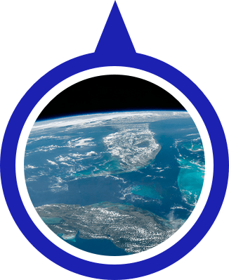
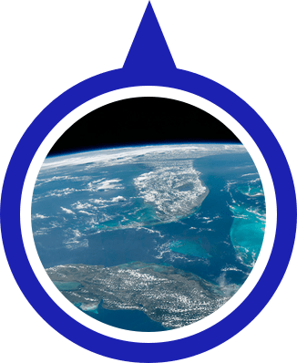
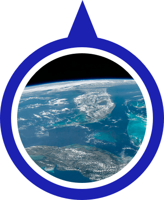
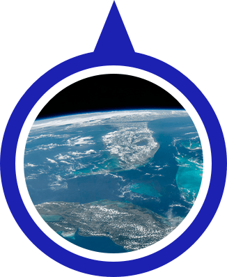

Third planet from the Sun and the only known planet to harbor life. About 29.2% of Earth's surface is land with remaining 70.8% is covered with water. Earth's distance from the Sun, physical properties and geological history have allowed life to evolve and thrive.
Earth's interior, like that of the other terrestrial planets, is divided into layers by their chemical or physical (rheological) properties. The outer layer is a chemically distinct silicate solid crust, which is underlain by a highly viscous solid mantle.
The total surface area of Earth is about 510 million km2. The continental crust consists of lower density material such as the igneous rocks granite and andesite. Less common is basalt, a denser volcanic rock that is the primary constituent of the ocean floors.
 

 
